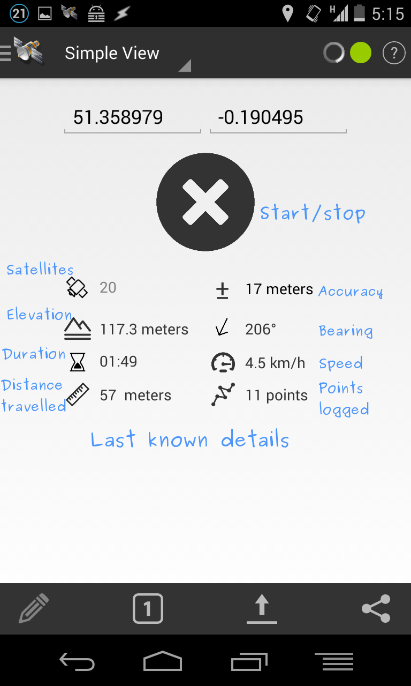
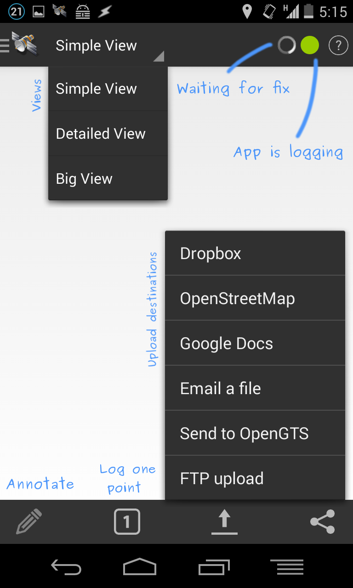
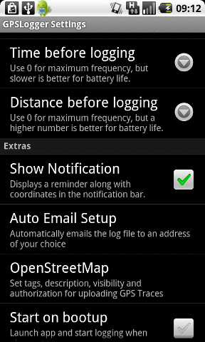
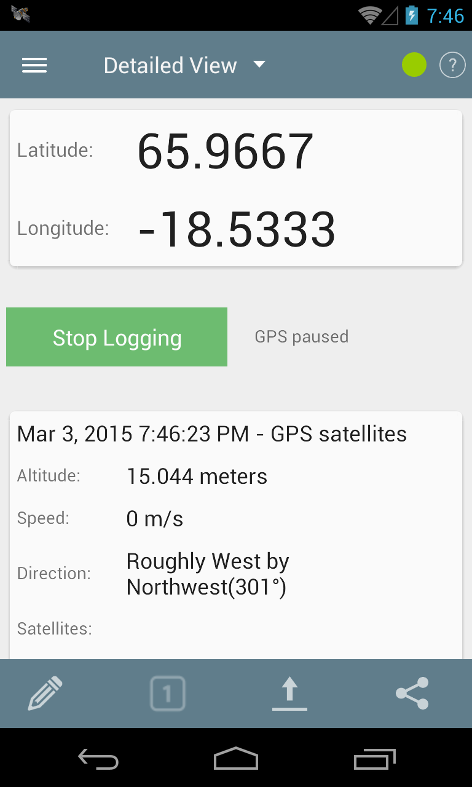
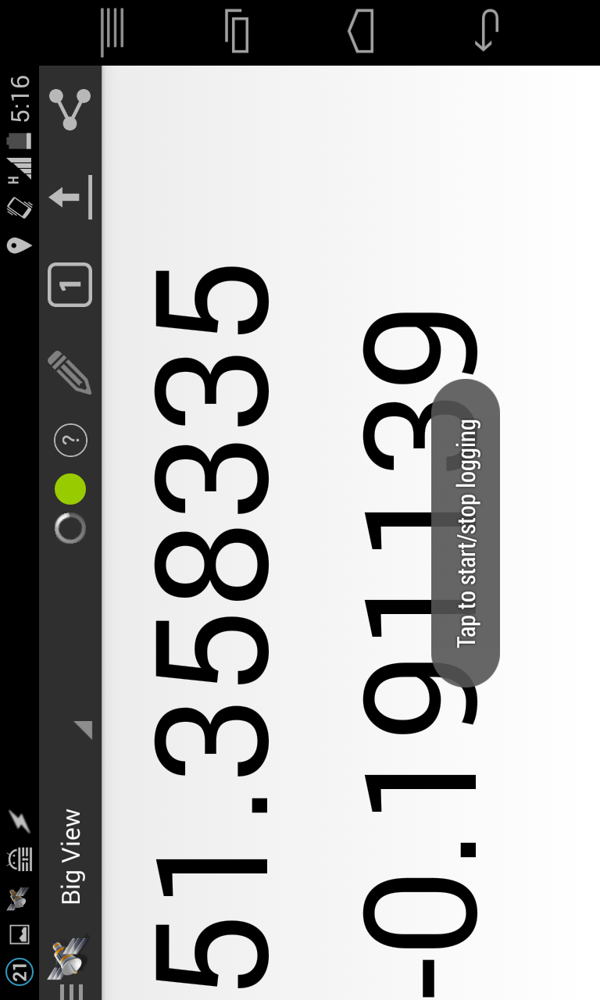
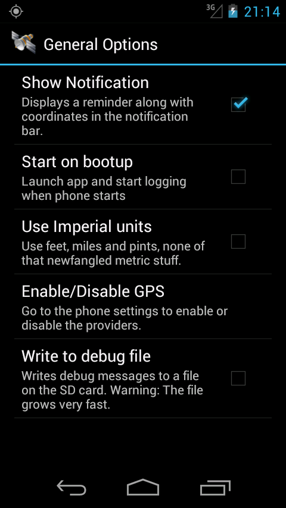

GPSLogger For Android
Lightweight GPS Logging Application For Android
Description
A battery efficient GPS Logger application for Android. Works on Android 2 onwards.
GPSLogger uses the GPS capabilities of your Android phone to log coordinates to a GPS or KML file at regular intervals. This can be particularly useful if you want to geotag your photos after a day out or share your travel route with someone. The purpose of this application is to be battery efficient to save you battery power when abroad and last as long as possible.
This is available on the Android Market as "GPS Logger for Android".
Features
- Logs to GPX and KML format, or if you want, only to screen
- Logs GPX points as tracks and track segments
- Also logs speed, direction and altitude
- Add a description to a point using the annotate menu
- Configure time intervals between points
- Configure distance intervals between points
- Notification icon with coordinates
- Uses cell towers for location when GPS is disabled or not available
- Prefer cell tower based location over GPS to save even more battery life
- Changes you make on the settings screen will take effect after the next point is logged
- Automatically email the file at set intervals to an email address of your choice.
- Share location via SMS/Email (and other apps such as Facebook or Twitter depending on what you've got installed)
- You can have it start logging on phone bootup
This has been tested on the Nexus One, G1, Hero, Desire, Legend and the Acer Liquid A1 so far. Please leave feedback with bugs or feature requests (or even criticism), and your phone make and model as well.
FAQ
How is this different from other logging apps?It's meant to be more battery efficient. A lot of other apps, such as MyTracks, usually go with the assumption that you have a data connection available and your routes won't be very long - this isn't very useful when all you want to do is log your position rather than marvel at it :p
It takes a long time to find a fix
When you go to a new location for the first time (especially after a flight), try running the app with 0 seconds and 0 meters so that it can find a fix by frequently polling.
How long can it run for?
I ran a few tests (0 meters and every 60 seconds) and was able to get about 12-16 hours on a fully charged Nexus One with wifi , GPS and background data transfer on. Turning background data and wifi can help you squeeze out a few more hours. You can get best results if you put your phone into airplane mode (GPS still works).
I see the GPS icon active between the intervals I've set, why is that?
It's how the Android OS has implemented its GPS system. When you say you want a point every 60 seconds (for example), that's actually a suggestion rather than an imperative, and so the time interval between GPS points is never guaranteed. GPSLogger has logic that checks the time difference, though, and will make sure that at least 60 seconds have passed before logging again.
It's not accurate!
The accuracy is only as good as your phone's GPS chip. You may also want to check your environment. The inaccuracy could be due to clouds, buildings, sunspots, alien invasion, etc.
My time interval has passed, but no point was logged
The GPS will have attempted to find its location and given up after a while. It all comes down to your location as well as your phone hardware. If your hardware is weak and you were in a location with the sky not visible, it's possible that the app tried to find a position but simply gave up.
How do I get to the file being logged?
You can connect your phone to your computer and mount the SD card, then copy the file off. Note that while your SD card is mounted, GPSLogger can't write to the card, since it's in use.
If you have Astro File Explorer, then you can go to /sdcard/GPSlogger > Long press file > Open as > Text > File Editor
I've changed the settings, but it's still showing/using the old settings
If the app is logging, and you make changes to the settings, the changes will take effect afteri> the next point is logged. This means that if you've set your interval as 1 hour, you have a long wait ahead of you. If you want the changes to take effect immediately, then stop logging and start it again so that the changes are refreshed.
How do I download it?
- Go to the Android Market on your phone
- Search for GPS Logger.
- The app name is "GPS Logger For Android" by author Mendhak.
Screenshots
Main screen

Settings screen



Auto Email Setup screen


OpenStreetMap Setup screen